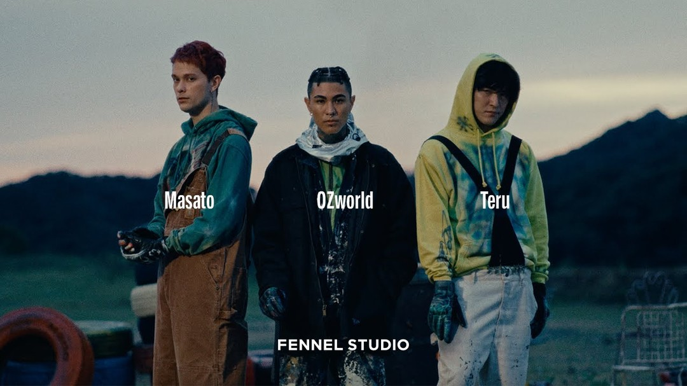
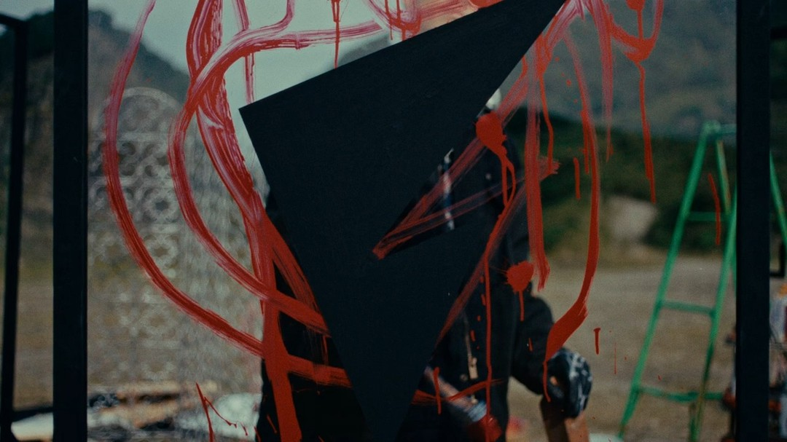

PRODUCTION STAFF
[NEW FENNEL FAMILY] Masato & Teru | FENNEL STUDIO


.
【PA Work】
[NEW FENNEL FAMILY]
Masato & Teru | FENNEL STUDIO
制作進行として携わらせていただきました。
#fennel
------
credit
Director / Editor / Color : Kazumi Watanabe
Dop : shun murakami(vil tokyo)
1st AC : Taiga Nakajima
2nd AC : Takuma Inose
Lightning Director : Sota Sugiyama
Lighting Assistant : Munenori Kikuchi
Production Designer : Katsuaki Goto
Production Designer assistant : Miyazaki Chikara
Stylist : Iori Yamaki
Hair & Make up : Mari Enda / Manaka Hayakawa
VFX : Shunsuke Yasumura
Transportation Department : Yuki Kawai (CORD)
Production assistant : Ryohta Morikawa
Production manager : CHOBI
Producer : Shohei Emi
Executive Producer : Sawadiii